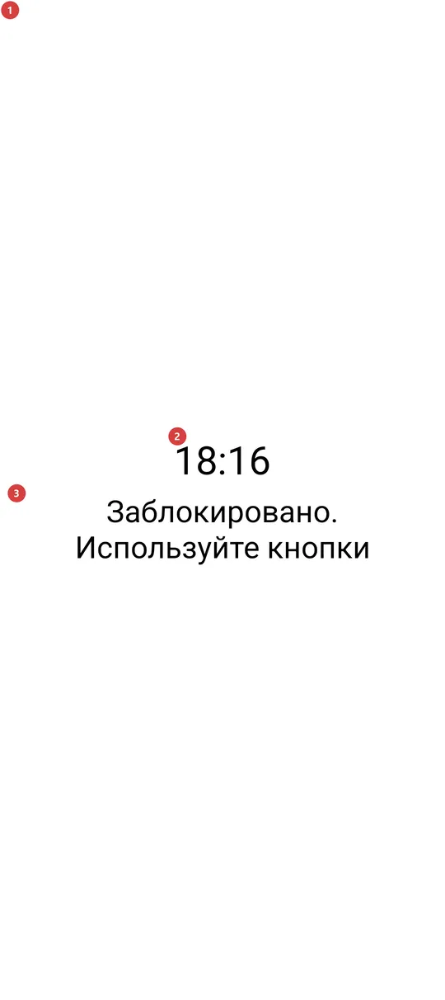
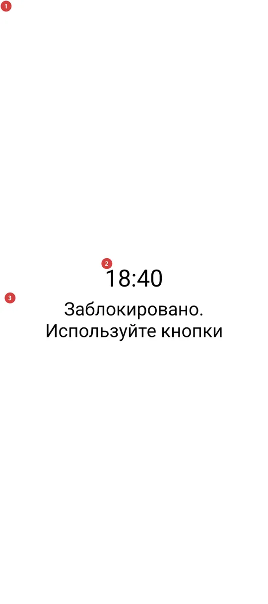

Водный фонарь
Для чего этот экран
Водный фонарь зажигает вспышку камеры и весь экран на полную яркость, а затем запирает экран от касаний. Он сделан для мокрых рук - в дождь или под душем, - когда сенсор нажимает сам себя. Выходят из него кнопкой громкости, а не касанием стекла.


Порядок действий
- Откройте «Водный фонарь» из меню программ, с панели программ или виджетом на домашнем экране. Если его там нет, сначала включите его в «Настройках», на вкладке «Управление», в группе «Дополнительные программы и сценарии». Вспышка камеры и экран 1 загорятся одновременно.
- С этого момента экран заперт. На нём видны только время 2 и напоминание 3, а касания стекла ничего не делают: мокрые пальцы и капли не могут ни закрыть, ни притушить, ни нажать что-либо. Подсказка «Заблокировано. Используйте кнопки» 3 означает кнопки громкости 4.
- Чтобы выключить свет, нажмите кнопку громкости 4: громкость вверх, громкость вниз или «без звука». Экран закроется, когда вы отпустите клавишу, а громкость не изменится.
- Экран не гаснет, пока свет включён, так что трогать телефон, чтобы он продолжал светить, не нужно.
- Если вы выйдете другим способом 5 - кнопкой питания или системным жестом, - вспышка тоже погаснет, и в кармане она гореть не останется. В воде на жест не рассчитывайте: капли могут его вызвать, и свет пропадёт.
Элементы
Светящийся экран
1Светящийся экранБелый экран на полной яркости с горящей вспышкой камеры, не реагирующий ни на какие касания.
Окно белое, на самой высокой яркости, и вместе с ним горит вспышка камеры. На телефоне без вспышки программа тоже работает: тогда единственный свет - это экран. Повышается только яркость этого окна, а не настройка яркости телефона, поэтому после выхода телефон такой же яркий, как был.
Все касания экрана намеренно поглощаются, поэтому вода на стекле ничего не закроет и не изменит. По той же причине спрятаны строка состояния и кнопки навигации. Осознанный свайп от края экрана всё же может ненадолго вернуть системные панели.
Время и напоминание
2ЧасыВремя крупными чёрными цифрами, читаемое с вытянутой руки.
Часы обновляются в начале каждой минуты. В каком формате они показаны, 12 или 24 часа, зависит от системы единиц приложения (метрическая показывает 24 часа, американская - 12), а не от формата часов устройства. Это только индикатор, касаться его нельзя.
3Заблокировано. Используйте кнопкиНапоминает, что касания отключены и выходить нужно кнопкой.
Строка всегда на экране, поэтому не придётся вспоминать в темноте или под дождём, как выйти. Кнопки, о которых она говорит, - это аппаратные кнопки телефона, в первую очередь кнопки громкости. Касание текста ничего не делает.
Как выйти
4Кнопки громкостиВыход: нажмите кнопку громкости - и свет погаснет.
«Громкость вверх», «громкость вниз» и «без звука» закрывают экран и гасят вспышку. Экран закрывается, когда вы отпускаете клавишу, а само нажатие поглощается, так что громкость музыки или звонка не меняется. Клавиша камеры, кнопка на гарнитуре и медиаклавиша «пуск/пауза» делают то же самое на устройствах, где они есть.
Кнопка «Назад» намеренно не входит в число клавиш выхода: при навигации жестами «назад» приходит от свайпа по стеклу, а мокрое стекло само даёт такие свайпы. Если на устройстве нет кнопок громкости, придётся воспользоваться другими способами выхода, описанными ниже.
- Сочетание клавиш
- Volume up / Volume down / Mute
5Кнопка питания и системные жестыДругие способы выйти. Они тоже гасят свет, но вода может их вызвать.
Экран не закрепляет себя и не блокирует системные жесты. Кнопка питания гасит дисплей, а жест «домой» или переключения приложений уводит на другой экран; в обоих случаях вспышка гаснет сразу, так что забыть её горящей в кармане или сумке нельзя.
В воде на эти способы не рассчитывайте: капля на стекле может вызвать жест, и свет пропадёт, когда он нужен. Когда хотите выключить свет сами, нажимайте кнопку громкости.